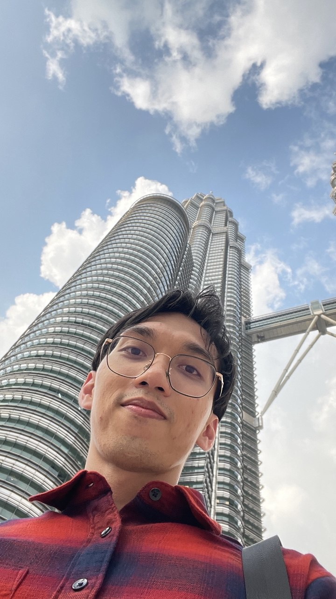

HAZIQ ROSLI

Summary
Detail-oriented and highly motivated computer science graduated with programming
skills and a passion for technology. Seeking to apply my expertise in problem-solving
to contribute to innovative projects and further develop my skills in dynamic, growth-oriented
organization. Eager to leverage my technical knowledge and ability to work collaboration
to drive success in the technology industry.
Working Experience
System Development(Internship - 2019)
MAJLIS BANDARAYA KUALA TERENGGANU
- Assigned to create a Hall Booking System as a project.
- Troubleshooting support for hardware and software issues.
- Provide technical support during events.
Store Crew (2020 - 2022)
7-ELEVEN MALAYSIA SDN BHD
- Operate cash register and ensure accurate transactions.
- Ensure products are neatly organized.
Assistant Store Manager (2022 - 2024)
7-ELEVEN MALAYSIA SDN BHD
- Ensure stock is available without overstocking.
- Track product sales and manage stock rotation.
- Oversee the day-to-day operations of the store including cash management.
Educational Qualification
SIJIL PELAJARAN MALAYSIA (3A 4B+ 1B 2C)
- Sekolah Menengah Agama Kampung Laut
DIPLOMA IN COMPUTER SCIENCE (3.31 CGPA)
- Universiti Teknologi MARA
My Hobbies
Contact Me